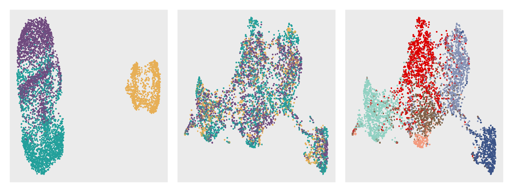

It is best to save the code below in an R file named mliver8.R and then run it on the server.
# ---------------------------- packages
library(stadia)
# ---------------------------- data
load("./data/mliver8.RData")
K <- 6
etas <- 0.15
# ---------------------------- model
d <- 35
set.seed(123)
system.time({
## set hyperparameters
hyper <- HyperParameters(mliver8, dim = d, eta = etas)
## run model
mliver8_stadia <- stadia(mliver8, hyper, dim = d, n_cluster = K,
platform = "visium", em.maxiter = 30)
})
# ---------------------------- save result
if(!dir.exists('./result')) dir.create('./result')
save(mliver8_stadia, file = "./result/mliver8_stadia.RData")First, load the dependent packages and data.
library(dplyr)
library(mclust)
library(ggplot2)
library(patchwork)
library(corrplot)
library(Seurat)
library(scater)
library(tibble)
library(scattermore)
load("./data/mliver8.RData")
load("./result/mliver8_stadia.RData")
batchCol <- c("#23A09B", "#704A7F", "#E7AF56")
sliceCol <- c("#E3932A", "#292E7A", "#C82257")
clusterCol <- c("#3C5488FF", "#F39B7FFF", "#8491B4FF", "#91D1C2FF", "#DC0000FF", "#7E6148FF")Merge the list of Seurat object mliver8 and save the results of STADIA results mliver8_stadia in it.
sample_info <- rep(c("CN73", "CN16", "CN65"), times = c(3, 2, 3))
mliver8.pp <- mapply(function(x, y) {
x$orig.ident<- y; return(x)}, mliver8, sample_info)
mliver8.merge <- merge(
x = mliver8.pp[[1]],y = mliver8.pp[-1],
add.cell.id = names(mliver8.pp), project = "mliver")
mliver8.merge <- mliver8.merge[,mliver8.merge@meta.data[,paste0('nFeature_', DefaultAssay(mliver8.merge))] > 200]Calculate UMAP coordinates with visualization.
# UMAP
mliver8.merge.reduction <- mliver8.merge %>%
NormalizeData(verbose = FALSE) %>%
FindVariableFeatures(nfeatures = 2000, verbose = FALSE) %>%
ScaleData(verbose = FALSE) %>%
RunPCA(npcs = 35, verbose = FALSE) %>%
RunUMAP(dims = 1:35, seed.use = 123, verbose = FALSE)
# 35 dimension space
ourFactor <- mliver8_stadia$factors %>% t()
rownames(ourFactor) <- colnames(mliver8.merge.reduction)
mliver8.merge.reduction[["stadia"]] <- CreateDimReducObject(
embeddings = ourFactor, key = paste0("stadia", "_"),
assay = DefaultAssay(mliver8.merge.reduction))
# 2 dimension space of UMAP
ourUmap <- calculateUMAP(t(ourFactor), ncomponents = 2)
colnames(ourUmap) <- c("UMAP_1", "UMAP_2")
mliver8.merge.reduction[["stadiaUmap"]] <- CreateDimReducObject(
embeddings = ourUmap,
key = "stadiaUmap_",
assay = DefaultAssay(mliver8.merge.reduction))
# Annotation
mliver8.merge.reduction$stadiaAnnotation <- mliver8_stadia$c_vec %>% as.vector()
save(mliver8.merge.reduction, file='./data/mliver8_umap.RData')Prepare the data frame using the ggplot function.
# dfb: original UMAP with section
dfb <- Embeddings(object = mliver8.merge.reduction, reduction = "umap") %>%
as.data.frame() %>%
cbind(sample = factor(mliver8.merge.reduction$orig.ident))
dfb$sample <- factor(dfb$sample,
levels = paste0("CN", c(73, 65, 16)))
# dfb: original UMAP with donor, slice infors
dfb <- dfb %>%
merge(
mliver8.merge.reduction@meta.data %>%
select(slice_id,row, col,
stadiaAnnotation) %>%
mutate(CN73 = ifelse(slice_id == "CN73_C1", "slice1",
ifelse(slice_id == "CN73_D1", "slice2",
ifelse(slice_id == "CN73_E2", "slice3", "slice_other"))),
CN65 = ifelse(slice_id == "CN65_D1", "slice1",
ifelse(slice_id == "CN65_D2", "slice2",
ifelse(slice_id == "CN65_E1", "slice3", "slice_other"))),
CN16 = ifelse(slice_id == "CN16_D2", "slice1",
ifelse(slice_id == "CN16_E2", "slice2", "slice_other"))),
by = 0)
# dfb with umap coordinates of our method
dfb <- dfb %>%
column_to_rownames(var = "Row.names") %>%
merge(Embeddings(mliver8.merge.reduction, reduction = "stadiaUmap"),
by = 0)Visualize UMAP plots with colors by mouse and spatial domains.
umap1_range <- range(dfb$umap_1); umap2_range <- range(dfb$umap_2)
ratio <- (max(umap1_range) - min(umap1_range))/(max(umap2_range) - min(umap2_range))
dfb$umap_2 <- dfb$umap_2*ratio
xaxis <- 32.45
yaxis <- 34.9
dfb$umap_1 <- dfb$umap_1*xaxis/yaxis
pb1 <- ggplot(dfb, aes(umap_1, umap_2, color = sample)) +
geom_scattermore(shape = 20, alpha = 1, pointsize = 3) +
scale_color_manual(values = batchCol) +
guides(color = guide_legend(override.aes = list(size = 2),
title = "Sections", ncol = 1)) +
theme(axis.title = element_blank(),
axis.text = element_blank(),
axis.ticks = element_blank(),
axis.ticks.length = unit(0, "pt"),
legend.title = element_blank(),
legend.key.size = unit(2.5, "mm"),
legend.spacing = unit(1, "mm"),
legend.position = "none",
panel.grid = element_blank())
pb2 <- dfb %>%
ggplot(aes(x = .data[["stadiaUmap_1"]],
y = .data[["stadiaUmap_2"]],
color = sample)) +
geom_scattermore(shape = 20, alpha = 1, pointsize = 3) +
scale_color_manual(values = batchCol) +
guides(color = guide_legend(override.aes = list(size = 2, nrow = 1))) +
theme(legend.position = "none",
legend.text = element_blank(),
legend.title = element_blank(),
legend.key.size = unit(4, "mm"),
panel.grid = element_blank(),
axis.ticks.length = unit(0, "mm")) + NoAxes()
dfb$stadiaAnnotation <- factor(dfb$stadiaAnnotation, levels = 1:6)
pb3 <- dfb %>%
ggplot(aes(x = .data[["stadiaUmap_1"]],
y = .data[["stadiaUmap_2"]],
color = .data[["stadiaAnnotation"]])) +
geom_scattermore(shape = 20, alpha = 1, pointsize = 3) +
scale_color_manual(values = clusterCol) +
guides(color = guide_legend(override.aes = list(size = 2, ncol = 1))) +
theme(legend.position = "none",
legend.key.size = unit(2.5, "mm"),
legend.spacing = unit(1, "mm"),
legend.text = element_blank(),
legend.title = element_blank(),
panel.grid = element_blank(),
axis.ticks.length = unit(0, "mm")) + NoAxes()
(pb1 | pb2 | pb3) 